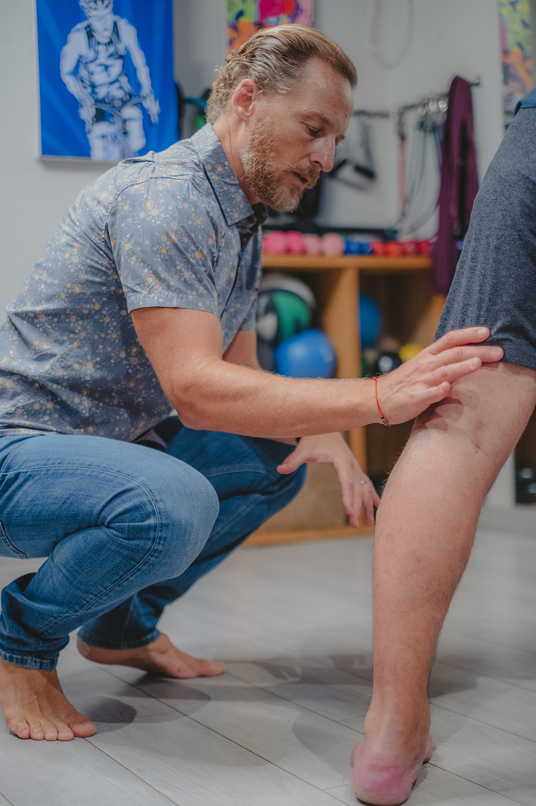
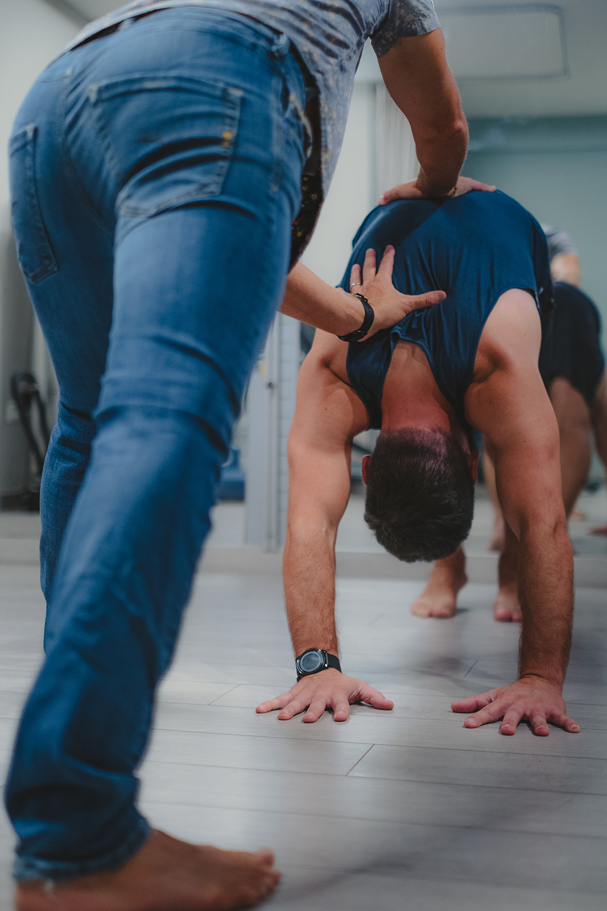

טיפול אישי המשלב פיזיותרפיה מבוססת ראיות, אבחון תנועה, טכניקות ידניות, שיקום ספורטיבי ומדרסים בהתאמה אישית.
ד'ר דוד גרבר, PT, DPT | פיזיותרפיסט משנת 1997 | טיפול אישי אחד-על-אחד
פתרון קליני ושיווקי מתקדם להפחתת עומסים מכף הרגל, גיד אכילס, הברכיים והגב התחתון – בהתאמה ביומכנית מדויקת לספורטאים ולשימוש יומי.

PT, DPT | פיזיותרפיסט מורשה
ד'ר דוד גרבר הוא פיזיותרפיסט בעל הכשרה בינלאומית וניסיון קליני משנת 1997. גישתו משלבת טכניקות ידניות מנואליות מהולנד, לימודי Doctor of Physical Therapy בארה"ב, ובסיס אקדמי מעמיק ביוגה (Vijnana Yoga) המיושם כבסיס תנועתי בטיפולים השונים. הקליניקה מיועדת לכולם – אינך חייב להיות ספורטאי כדי ליהנות מטיפול איכותי; אנו מטפלים בכאבי יומיום, עומסים מפרקיים, בעיות יציבה וכלל פגיעות השריר-שלד בכל רמת פעילות.

חלוקת עומסים אופטימלית להפחתת כאב בכף הרגל, באכילס ובגב

קליניקה חדישה ומאובזרת באווירה מקצועית ורגועה
קליניקת TherapySport בזיכרון יעקב בהנהלת ד'ר דוד גרבר מציעה מענה מקיף ומקצועי לפיזיותרפיית ספורט, שיקום אורתופדי, אבחון ביומכני, התאמת מדרסים וטיפול בכאבי שריר-שלד יומיומיים. הטיפול מיועד לכולם – אינך חייב להיות ספורטאי כדי לקבל טיפול! הגישה הקלינית משלבת בסיס מעמיק ביוגה טיפולית (Vijnana Yoga) להבנת תנועה ויציבה, ומתמקדת בהבנת הגורמים התורמים לפציעה ולא רק בסימפטומים, תוך ליווי אישי בגובה העיניים.
במסגרת תוכנית הטיפול ניתן לשלב טכניקות ידניות, דיקור יבש, לייזר, מתיחה ממוחשבת (DTS Decompression), אולטרסאונד, יוגה טיפולית, טייפינג, מדרסים ביומכניים וליווי אישי אחד-על-אחד.
בחרו אזור טיפול לקבלת פירוט קליני, גישת האבחון והפתרונות המותאמים.
כאבים קדמיים בברך, תסמונת ITB או עומסים במפרק נובעים לרוב משילוב של חוסר איזון שרירי, זווית קליטים או מנח כף רגל. האבחון בוחן את שרשרת התנועה להפחתת העומס ולחזרה הדרגתית לפעילות.
טיפים קליניים יומיים, תרגילי שיקום והצצה אל מאחורי הקלעים בקליניקה.

תרגול וחיזוק מותאם למניעת פציעות
צפייה באינסטגרם ↗
חזרה מודרכת לריצה לאחר פציעה
צפייה באינסטגרם ↗
אבחון ביומכני לכף הרגל והעקב
צפייה באינסטגרם ↗
מניעת עומסי יתר בגידי אכילס
צפייה באינסטגרם ↗
טכניקות הולנדיות מבוססות ראיות
צפייה באינסטגרם ↗
חיזוק מייצבי הגו והמפרקים
צפייה באינסטגרם ↗חוויות טיפול וביקורות אותנטיות שנכתבו על ד'ר דוד גרבר ב-Google Maps.
"ברצוני להמליץ מכל הלב על הפיזיותרפיסט דויד, שמטפל בי במסירות, מקצועיות ודיוק מרשים. לאחרונה טיפל גם באשתי, שסבלה מפציעת כתף קשה והייתה כבר על סף ניתוח. בזכות הטיפול של דויד – יסודי, מותאם אישית ועיקר אנושי – היא חזרה לתפקוד מלא, ללא צורך בניתוח כלל. דויד הוא איש מקצוע ברמה הגבוהה ביותר."
מדריכים מעשיים וסרטוני תרגול מפי ד'ר דוד גרבר (בקרוב יתווספו סרטוני וידאו).
 מדרסים ודריכה
🎥 סרטון הדרכה בקרוב
מדרסים ודריכה
🎥 סרטון הדרכה בקרוב
כיצד מדרסים ביומכניים מסייעים בחלוקת עומסים, הפחתת עומס מאכילס וכף הרגל, ומתי הם נדרשים.
אבחון גורמים תורמים לכאב קדמי בברך ברכיבה וריצה, כיוון קליטים ואיזון שרירי.
עקרונות השיקום הטרנדיני ואמידה נכונה של עומסים הדרגתיים למניעת נסיגה.
פנייה ישירה ומהירה מתבצעת ישירות ב-WhatsApp או בשיחת טלפון. ד'ר דוד גרבר יענה לכם בהקדם לבדיקת התאמה לטיפול בקליניקה.